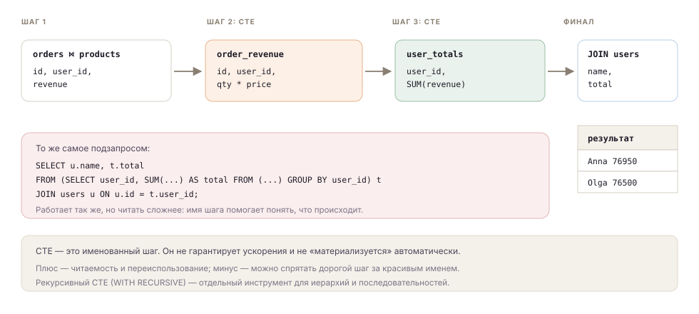

Подзапросы и CTE: как разложить вопрос Один большой запрос или несколько именованных шагов
Сложный отчёт почти никогда не пишется одним куском. Его разбивают на шаги: сначала посчитать выручку по заказам, потом собрать итоги, потом сравнить с порогом. CTE дают этим шагам имена.
01Зачем это backend-разработчику
- Отчёты из нескольких шагов: «пользователи, чья выручка выше средней», «категории с максимальной выручкой», «заказы без пользователя».
- Читаемость: CTE превращает вложенный «матрёшечный» запрос в последовательность именованных шагов.
- Правильный инструмент для анти-соединения:
NOT EXISTSнадёжнее, чемNOT INс NULL. - Собеседование: «чем CTE отличается от подзапроса», «IN или EXISTS», «что такое рекурсивный CTE».
02Ассоциация-якорь: черновик и чистовой вариант
Подзапрос — это вычисление «внутри строки» запроса. Как пометка на полях: работает, но если пометок много, читать становится тяжело.
CTE — это черновик с заголовком. Вы выносите шаг, даёте ему имя
(WITH order_revenue AS (...)) и дальше ссылаетесь на него как на таблицу.
Логика та же, но видно, из каких частей состоит ответ.
03Ассоциативный ряд: восемь звеньев
- скалярныйодно значение в сравнении
- INсписок значений из подзапроса
- EXISTSпроверка существования строки
- NOT EXISTSанти-соединение
- коррелированныйзависит от внешней строки
- WITHименованный шаг
- несколько CTEшаги ссылаются друг на друга
- RECURSIVEповтор до условия остановки
04Схема: подзапрос против CTE

05Как это устроено на самом деле
Скалярный подзапрос
Возвращает одно значение и используется в сравнении: WHERE revenue > (SELECT AVG(...)).
Если подзапрос вернёт больше одной строки, будет ошибка.
IN и EXISTS
IN (SELECT ...) сравнивает значение со списком. EXISTS (SELECT 1 ...)
проверяет, есть ли хотя бы одна строка. Для анти-соединения NOT EXISTS
безопаснее: он не ломается о NULL в подзапросе (глава 20).
Коррелированный подзапрос
Внутренний запрос ссылается на внешнюю строку: WHERE o.user_id = u.id.
Такой подзапрос выполняется для каждой строки внешнего запроса — на больших таблицах это дорого.
Часто его можно заменить соединением или оконной функцией (глава 23).
CTE не ускоряет автоматически
WITH — это про структуру, а не про производительность. В PostgreSQL 12+
CTE по умолчанию может «встраиваться» в основной запрос, как обычный подзапрос. Если нужна
принудительная материализация — MATERIALIZED, но это осознанное решение.
06Лаборатория: запустить и увидеть
База learning_shop, выручка заказа — quantity * price.
Шаг 1. Скалярный подзапрос: средняя выручка заказа
SELECT ROUND(AVG(quantity * price), 2) AS avg_revenue FROM orders o JOIN products p ON p.id = o.product_id;
Шаг 2. Заказы выше средней выручки
SELECT o.id, (o.quantity * p.price) AS revenue
FROM orders o JOIN products p ON p.id = o.product_id
WHERE (o.quantity * p.price) > (
SELECT AVG(o2.quantity * p2.price)
FROM orders o2 JOIN products p2 ON p2.id = o2.product_id
)
ORDER BY revenue DESC;
Шаг 3. NOT EXISTS: заказы без пользователя
SELECT o.id, o.created_at FROM orders o WHERE NOT EXISTS (SELECT 1 FROM users u WHERE u.id = o.user_id);
SELECT 1 внутри EXISTS — не «выбрать единицу», а «есть ли хоть одна строка».
Важен сам факт существования.
Шаг 4. CTE: выручка по пользователям
WITH order_revenue AS (
SELECT o.id, o.user_id, o.quantity * p.price AS revenue
FROM orders o JOIN products p ON p.id = o.product_id
),
user_totals AS (
SELECT user_id, SUM(revenue) AS total
FROM order_revenue
GROUP BY user_id
)
SELECT u.name, t.total
FROM user_totals t JOIN users u ON u.id = t.user_id
ORDER BY t.total DESC;
Два шага вместо вложенных скобок: order_revenue — что такое выручка заказа,
user_totals — как её суммировать. Читается сверху вниз, как код.
Шаг 5. CTE по месяцам
WITH monthly AS (
SELECT DATE_TRUNC('month', o.created_at)::date AS month,
SUM(o.quantity * p.price) AS revenue
FROM orders o JOIN products p ON p.id = o.product_id
GROUP BY 1
)
SELECT * FROM monthly ORDER BY month;
Шаг 6. CTE: категория с максимальной выручкой
WITH category_revenue AS (
SELECT p.category, SUM(o.quantity * p.price) AS revenue
FROM orders o JOIN products p ON p.id = o.product_id
GROUP BY p.category
)
SELECT category, revenue
FROM category_revenue
ORDER BY revenue DESC
LIMIT 1;
Шаг 7. Коррелированный подзапрос в SELECT
SELECT u.name,
(SELECT COUNT(*) FROM orders o WHERE o.user_id = u.id) AS orders
FROM users u
ORDER BY u.id;
Подзапрос выполняется для каждого пользователя. Для пяти строк это нормально; на большом
справочнике дешевле был бы LEFT JOIN + GROUP BY.
Шаг 8. Рекурсивный CTE: числа 1..5
WITH RECURSIVE numbers AS (
SELECT 1 AS n
UNION ALL
SELECT n + 1 FROM numbers WHERE n < 5
)
SELECT * FROM numbers;
Здесь только идея: базовый шаг, рекурсивный шаг и условие остановки. Так решают иерархии (категории с родителями, оргструктуры) — подробнее в документации.
07Мост: CTE и промежуточные переменные в pandas
orders["revenue"] = orders["quantity"] * products["price"] # order_revenue
user_totals = orders.groupby("user_id")["revenue"].sum() # user_totals
report = user_totals.reset_index().merge(users, on="user_id")
В pandas шаг тоже лучше называть промежуточной переменной, чем вкладывать всё в одну строку. CTE — это тот же принцип, только внутри одного SQL-запроса.
08Шесть ошибок, на которых спотыкаются
WHERE x = (SELECT ...) падает, если подзапрос вернул больше одного значения.
LIMIT 1) или использовать IN/EXISTS.Проверено в главе 20: результат пустой, хотя строки есть.
NOT EXISTS или отфильтровать NULL в подзапросе.Выполняется на каждую строку внешнего запроса.
WITH не гарантирует, что шаг посчитается один раз; оптимизатор решает сам.
Забыли условие WHERE n < 5 — запрос не завершится.
Одно и то же вычисление повторяется в нескольких CTE — риск расхождения.
09Вопросы с собеседования
Чем подзапрос отличается от CTE?
Функционально часто ничем: это один и тот же расчёт. CTE вынесен в WITH и имеет имя, поэтому читается как шаг, а не как вложение.
Чем EXISTS отличается от IN?
EXISTS проверяет наличие строки и не зависит от NULL; IN сравнивает значение со списком и ломается о NULL в отрицании.
Что такое коррелированный подзапрос?
Подзапрос, который ссылается на колонки внешнего запроса и выполняется для каждой его строки. Мощно, но потенциально дорого.
Ускоряет ли CTE запрос?
Само по себе — нет. Это инструмент структуры; PostgreSQL 12+ часто встраивает CTE в основной запрос. Для ускорения нужны индексы, планы и меньше данных.
Как найти строки без пары?
NOT EXISTS (надёжно) или LEFT JOIN ... WHERE right.id IS NULL (анти-соединение).
Что такое рекурсивный CTE?
CTE, который ссылается сам на себя: базовый шаг + рекурсивный шаг + условие остановки. Для иерархий и генерации последовательностей.
Когда лучше несколько CTE, а когда один запрос?
Если шаги имеют смысл по отдельности и их хочется проверить по отдельности — CTE. Если запрос простой, лишние имена только мешают.
Может ли CTE использоваться дважды?
Да, к одному CTE можно обращаться в нескольких местах основного запроса — это одно из преимуществ перед подзапросом.
10Три задачи: сначала своя попытка
01 Пользователи выше среднего
Найдите пользователей, чья суммарная выручка выше средней суммарной выручки по пользователям.
Показать решение
WITH totals AS (
SELECT o.user_id, SUM(o.quantity * p.price) AS total
FROM orders o JOIN products p ON p.id = o.product_id
WHERE o.user_id IS NOT NULL
GROUP BY o.user_id
)
SELECT u.name, t.total
FROM totals t JOIN users u ON u.id = t.user_id
WHERE t.total > (SELECT AVG(total) FROM totals)
ORDER BY t.total DESC;
Что важно. Среднее считается по агрегатам (AVG(total)),
а не по строкам заказов — это разные числа.
02 Товары без заказов
Найдите товары, которые ни разу не заказывали. Есть ли такие в базе?
Показать решение
SELECT p.id, p.name
FROM products p
WHERE NOT EXISTS (
SELECT 1 FROM orders o WHERE o.product_id = p.id
);
Что важно. Пустой результат — тоже ответ: все товары продавались. Проверка «нет строк» — обычная часть анализа.
03 Две CTE: месяц и средний чек
Посчитайте выручку по месяцам и покажите месяц с максимальной выручкой.
Показать решение
WITH monthly AS (
SELECT DATE_TRUNC('month', o.created_at)::date AS month,
SUM(o.quantity * p.price) AS revenue
FROM orders o JOIN products p ON p.id = o.product_id
GROUP BY 1
)
SELECT month, revenue
FROM monthly
ORDER BY revenue DESC
LIMIT 1;